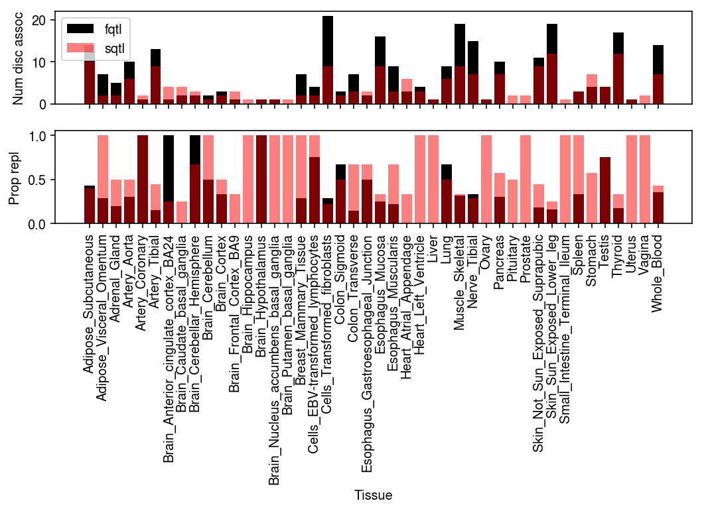

AD brain-specific TWAS analysis
Table of Contents
Introduction
Here, we perform discovery and replication of AD gene-level associations in
brain tissues using fqtl models.
Setup
import glob import itertools as it import os.path import numpy as np import pandas as pd import scipy.linalg as sl import scipy.special as sp import scipy.stats as st import statsmodels.api as sm
%matplotlib inline %config InlineBackend.figure_formats = set(['retina'])
import colorcet import matplotlib import matplotlib.pyplot as plt plt.rcParams['font.family'] = 'Nimbus Sans' plt.rcParams['figure.facecolor'] = 'w'
Data
Fitted elastic net models
Gamazon et al. 2015 trained elastic net models on GTEx v6p. Download the fitted models from PredictDB.
curl -OL "https://zenodo.org/record/3572842/files/GTEx-V6p-1KG-2016-11-16.tar.gz"
tar xf GTEx-V6p-1KG-2016-11-16.tar.gz
rm GTEx-V6p-1KG-2016-11-16.tar.gz
The database uses rsid as the key for the SNPs. Download the dbSNP annotation to convert rsids to (chromosome, start, end).
curl -O --ftp-pasv "https://ftp.ncbi.nih.gov/snp/pre_build152/organisms/human_9606_b151_GRCh37p13/VCF/00-common_all.vcf.gz" curl -O --ftp-pasv "https://ftp.ncbi.nih.gov/snp/pre_build152/organisms/human_9606_b151_GRCh37p13/VCF/00-common_all.vcf.gz.tbi"
UTMOST summary statistics
Download UTMOST summary statistics.
curl --ftp-pasv -OL "ftp://ftp.biostat.wisc.edu/pub/lu_group/Projects/UTMOST/load_utmost_sumstats/utmost.cross.tissue.sumstats.igap.discovery.txt" curl --ftp-pasv -OL "ftp://ftp.biostat.wisc.edu/pub/lu_group/Projects/UTMOST/load_utmost_sumstats/utmost.cross.tissue.sumstats.gwax.replicate.txt"
Results
sqtl associations
Read the results.
n_chunks = 29 igap_sqtl_stat = pd.concat([pd.read_csv(f'/broad/hptmp/aksarkar/twas/imputed_IGAP_Alzheimer-{i}.sqtl.stat.txt.gz', index_col=0, sep='\t') for i in range(n_chunks)]) igap_sqtl_pval = pd.concat([pd.read_csv(f'/broad/hptmp/aksarkar/twas/imputed_IGAP_Alzheimer-{i}.sqtl.pval.txt.gz', index_col=0, sep='\t') for i in range(n_chunks)]) gwax_sqtl_stat = pd.concat([pd.read_csv(f'/broad/hptmp/aksarkar/twas/ad-gwax-hg37-{i}.sqtl.stat.txt.gz', index_col=0, sep='\t') for i in range(n_chunks)]) gwax_sqtl_pval = pd.concat([pd.read_csv(f'/broad/hptmp/aksarkar/twas/ad-gwax-hg37-{i}.sqtl.pval.txt.gz', index_col=0, sep='\t') for i in range(n_chunks)])
Find the significant associations in the discovery cohort (IGAP; FDR 5%).
igap_sqtl_sig = igap_sqtl_pval.apply(lambda x: sm.stats.multipletests(x, alpha=0.1, method='fdr_bh')[0])
For the significant associations, determine whether they replicated (GWAX; FDR 5%).
gwax_sqtl_rep = gwax_sqtl_pval[igap_sqtl_sig].apply(lambda x: sm.stats.multipletests(x, alpha=0.1, method='fdr_bh')[0])
fqtl associations
Read the results.
n_chunks = 29 igap_fqtl_stat = pd.concat([pd.read_csv(f'/broad/hptmp/aksarkar/twas/imputed_IGAP_Alzheimer-{i}.fqtl.stat.txt.gz', index_col=0, sep='\t') for i in range(n_chunks)], sort=True) igap_fqtl_pval = pd.concat([pd.read_csv(f'/broad/hptmp/aksarkar/twas/imputed_IGAP_Alzheimer-{i}.fqtl.pval.txt.gz', index_col=0, sep='\t') for i in range(n_chunks)], sort=True) gwax_fqtl_stat = pd.concat([pd.read_csv(f'/broad/hptmp/aksarkar/twas/ad-gwax-hg37-{i}.fqtl.stat.txt.gz', index_col=0, sep='\t') for i in range(n_chunks)], sort=True) gwax_fqtl_pval = pd.concat([pd.read_csv(f'/broad/hptmp/aksarkar/twas/ad-gwax-hg37-{i}.fqtl.pval.txt.gz', index_col=0, sep='\t') for i in range(n_chunks)], sort=True)
Find the significant associations in the discovery cohort (IGAP; FDR 5%), and determine whether they replicated (GWAX; FDR 5%).
igap_fqtl_sig = igap_fqtl_pval.apply(lambda x: sm.stats.multipletests(x, alpha=0.1, method='fdr_bh')[0]) gwax_fqtl_rep = gwax_fqtl_pval[igap_fqtl_sig].apply(lambda x: sm.stats.multipletests(x, alpha=0.1, method='fdr_bh')[0])
UTMOST associations
Read the data.
igap_utmost_pval = pd.read_csv('/broad/hptmp/aksarkar/utmost.cross.tissue.sumstats.igap.discovery.txt', sep='\t', index_col=0) gwax_utmost_pval = pd.read_csv('/broad/hptmp/aksarkar/utmost.cross.tissue.sumstats.gwax.replicate.txt', sep='\t', index_col=0)
igap_utmost_sig = sm.stats.multipletests(igap_utmost_pval['pvalue'], alpha=0.1, method='fdr_bh')[0] gwax_utmost_rep = sm.stats.multipletests(gwax_utmost_pval.loc[igap_utmost_sig, 'pvalue'], alpha=0.1, method='fdr_bh')[0]
Comparison
Compare the number of discovered/replicated associations in brain tissues between sqtl/fqtl.
grid = np.arange(gwax_fqtl_rep.shape[1]) plt.clf() fig, ax = plt.subplots(2, 1, sharex=True) fig.set_size_inches(7.5, 5.5) ax[0].bar(grid, igap_sqtl_sig.sum(), color='k', label='sqtl') ax[0].bar(grid, igap_fqtl_sig.sum(), color='r', alpha=0.5, label='fqtl') ax[0].legend() ax[0].set_ylabel('Num disc assoc') ax[1].bar(grid, gwax_sqtl_rep.sum() / igap_sqtl_sig.sum(), color='k') ax[1].bar(grid, gwax_fqtl_rep.sum() / igap_fqtl_sig.sum(), color='r', alpha=0.5) ax[1].set_xticks(grid) ax[1].set_xticklabels(gwax_fqtl_rep.columns, rotation=90) ax[1].set_xlabel('Tissue') ax[1].set_ylabel('Prop repl') fig.tight_layout()

Compare the total number of associations (across tissues) between sqtl, fqtl, and UTMOST.
pd.Series({'sqtl': igap_sqtl_sig.agg(any, axis=1).sum(),
'fqtl': igap_fqtl_sig.agg(any, axis=1).sum(),
'utmost': igap_utmost_sig.sum()})
sqtl 73 fqtl 37 utmost 192 dtype: int64
Compare the total number of replications.
pd.Series({'sqtl': gwax_sqtl_rep.agg(any, axis=1).sum(),
'fqtl': gwax_fqtl_rep.agg(any, axis=1).sum(),
'utmost': gwax_utmost_rep.sum()})
sqtl 26 fqtl 10 utmost 29 dtype: int64